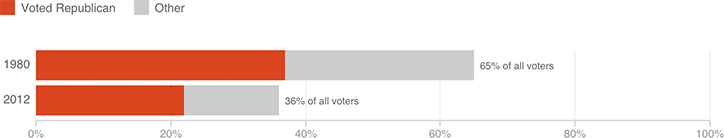

A Shrinking Share Of The Voting Public
In 2012, 36 percent of all voters were white and were not college-educated, down from 65 percent in 1980. In both years, these voters tended to favor the Republican candidate.
